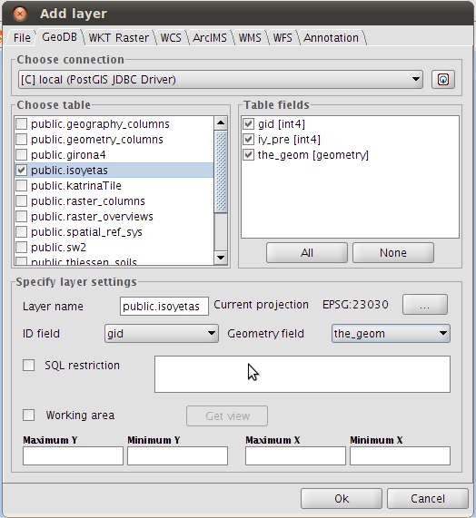
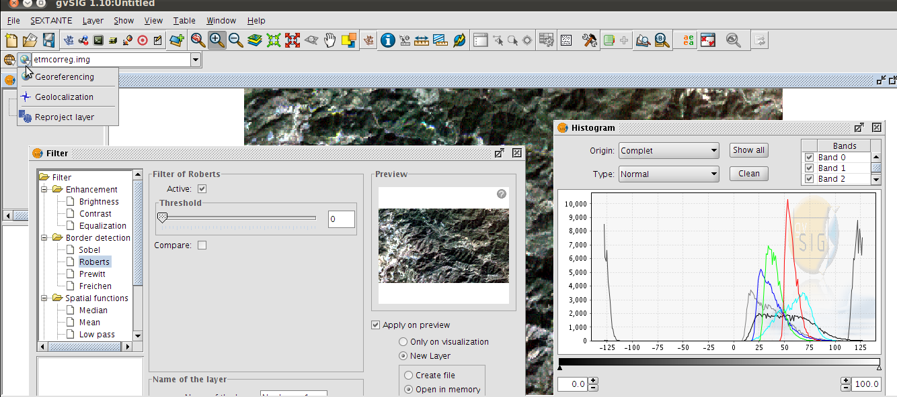
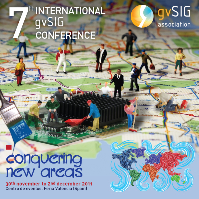

PostGIS Raster on gvSIG Desktop
PostGIS Raster on gvSIG Desktop
Jorge Sanz
@xurxosanz
jsanz [at] gvsig [dot] com
Ignacio Brodin
@nachobrodin
ibrodin [at] prodevelop [dot] es
http://bit.ly/foss4g11-gvsigpg
gvSIG Desktop
gvSIG Desktop
http://www.gvsig.org
Free Software Multiplatform Desktop GIS tool
Since 2004
Current stable release 1.11
Stabilizing 1.12 and 2.0
OSGeo incubating project
Mature community
http://outreach.gvsig.org/case-studies
gvSIG Desktop
Visualization of raster and vector data
Access to remote databases and OGC services
Geoprocessing for vector and raster data
Editing and Map authoring
Many community plugins
Professional services (i.e.
gvSIG Assocation
)
gvSIG Desktop and PostGIS
GeoDB: PostGIS, Oracle, MySQL, ArcSDE
Access, edit, export to postgis tables

gvSIG Desktop and raster
Based on GDAL (JNI bindings)
Band management, filter, reproject, georeference, export, clip,...

PostGIS Raster
Pierre Racine
- Friday - 11:00 am -
Windows
Linux Room
Formerly WKT Raster, now part of PostGIS 2.0
PostGIS Extension
Raster data type
SQL functions to manipulate and analyze
http://trac.osgeo.org/postgis/wiki/WKTRaster
PostGIS Raster
raster2pgsql.py
to generate SQL from file
gvSIG Driver: references
Hosted at OSOR.eu
http://forge.osor.eu/projects/gvsig-postgisra/
gvSIG.org web page
http://www.gvsig.org/web/projects/contrib/gvsig-postgisr
Funded by España Virtual R&D project
http://www.españavirtual.org/
Developed in collaboration with Deimos Space
http://www.deimos-space.com/
Demo
http://www.youtube.com/watch?v=AeTpQHdAwmU
Status
Prototype running on gvSIG 1.x
Based on GDAL 1.7.2 and PostGIS 1.5.2
Next steps
Upgrades:
Upgrade gvSIG support to PostGIS 2.0 and GDAL 1.8
Upgrade the extension to gvSIG 2.0
More features:
Improve gvSIG UI layer loader
Load rasters into the database
Delegate analysis to database
Thanks! Questions?
Jorge Sanz
@xurxosanz
jsanz [at] gvsig [dot] com
Ignacio Brodin
@nachobrodin
ibrodin [at] prodevelop [dot] es
http://bit.ly/foss4g11-gvsigpg
You are invited

←
→
FOSS4G 2011
· Denver ·
/
Go to slide:
#